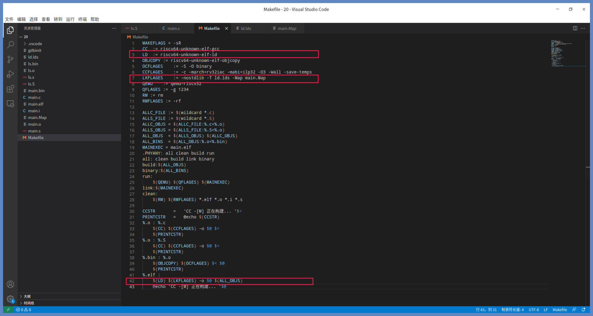

- 00 开篇词 练好基本功，优秀工程师成长第一步.md
- 01 CISC & RISC：从何而来，何至于此.md
- 02 RISC特性与发展：RISC-V凭什么成为“半导体行业的Linux”？.md
- 03 硬件语言筑基（一）：从硬件语言开启手写CPU之旅.md
- 04 硬件语言筑基（二）_ 代码是怎么生成具体电路的？.md
- 05 指令架构：RISC-V在CPU设计上到底有哪些优势？.md
- 06 手写CPU（一）：迷你CPU架构设计与取指令实现.md
- 07 手写CPU（二）：如何实现指令译码模块？.md
- 08 手写CPU（三）：如何实现指令执行模块？.md
- 09 手写CPU（四）：如何实现CPU流水线的访存阶段？.md
- 10 手写CPU（五）：CPU流水线的写回模块如何实现？.md
- 11 手写CPU（六）：如何让我们的CPU跑起来？.md
- 12 QEMU：支持RISC-V的QEMU如何构建？.md
- 13 小试牛刀：跑通RISC-V平台的Hello World程序.md
- 14 走进C语言：高级语言怎样抽象执行逻辑？.md
- 15 C与汇编：揭秘C语言编译器的“搬砖”日常.md
- 16 RISC-V指令精讲（一）：算术指令实现与调试.md
- 17 RISC-V指令精讲（二）：算术指令实现与调试.md
- 18 RISC-V指令精讲（三）：跳转指令实现与调试.md
- 19 RISC-V指令精讲（四）：跳转指令实现与调试.md
- 20 RISC-V指令精讲（五）：原子指令实现与调试.md
- 21 RISC-V指令精讲（六）：加载指令实现与调试.md
- 22 RISC-V指令精讲（七）：访存指令实现与调试.md
- 23 内存地址空间：程序中地址的三种产生方式.md
- 24 虚实结合：虚拟内存和物理内存.md
- 25 堆&栈：堆与栈的区别和应用.md
- 26 延迟分配：提高内存利用率的三种机制.md
- 27 应用内存管理：Linux的应用与内存管理.md
- 28 进程调度：应用为什么能并行执行？.md
- 29 应用间通信（一）：详解Linux进程IPC.md
- 30 应用间通信（二）：详解Linux进程IPC.md
- 31 外设通信：IO Cache与IO调度.md
- 32 IO管理：Linux如何管理多个外设？.md
- 33 lotop与lostat命令：聊聊命令背后的故事与工作原理.md
- 34 文件仓库：初识文件与文件系统.md
- 35 Linux文件系统（一）：Linux如何存放文件？.md
- 36 Linux文件系统（二）：Linux如何存放文件？.md
- 37 浏览器原理（一）：浏览器为什么要用多进程模型？.md
- 38 浏览器原理（二）：浏览器进程通信与网络渲染详解.md
- 39 源码解读：V8 执行 JS 代码的全过程.md
- 40 内功心法（一）：内核和后端通用的设计思想有哪些？.md
- 41 内功心法（二）：内核和后端通用的设计思想有哪些？.md
- 42 性能调优：性能调优工具eBPF和调优方法.md
- 先睹为快：迷你CPU项目效果演示.md
- 加餐01 云计算基础：自己动手搭建一款IAAS虚拟化平台.md
- 加餐02 学习攻略（一）：大数据&云计算，究竟怎么学？.md
- 加餐03 学习攻略（二）：大数据&云计算，究竟怎么学？.md
- 加餐04 谈谈容器云与和CaaS平台.md
- 加餐05 分布式微服务与智能SaaS.md
- 国庆策划01 知识挑战赛：检验一下学习成果吧！.md
- 国庆策划02 来自课代表的学习锦囊.md
- 国庆策划03 揭秘代码优化操作和栈保护机制.md
- 温故知新 思考题参考答案（一）.md
- 用户故事 我是怎样学习Verilog的？.md
- 结束语 心若有所向往，何惧道阻且长.md
23 内存地址空间：程序中地址的三种产生方式
你好，我是LMOS。
前面我们一起探讨了RISC-V芯片，设计和实现了一个迷你CPU。之后还深入研究了CPU上面运行的语言和指令系统，它们是构成程序的重要要素。依托于芯片和语言、指令，我们就可以编写和执行程序了。
不过我们开发应用的时候，还有个打交道最频繁的模块——内存。很多工程问题你不懂内存，就会举步维艰。你也许觉得内存知识太难了，不但关联知识又多又散乱，而且深挖下去感觉没有尽头。但计算机的硬核基础，内存是必修关卡，只要你跟住我的节奏坚持下来，一定可以把内存的本质、内存系统的来龙去脉都弄明白，一起加油。
这节课，让我们迈出认识内存的第一步，我们先搞清楚CPU怎么访问内存，然后再来分析内存地址从何而来，最终让你建立对内存地址空间的理解。这节课的配套代码，你可以从这里下载。
CPU如何访问内存
CPU怎么访问内存？我们回想一下，之前讲过的高级语言和低级语言转化过程。
我们先思考一下，C语言把我们写出来的变量和函数都转换成了什么呢？如果记不太清了，可以回顾[第十五节课]。没错，C语言把变量名和函数名都转换成了汇编语言里的标号，而汇编语言的标号，就是机器更好理解的符号。符号具体包括符号类型、符号名称和符号地址这几个属性。其中，符号地址是由一个叫链接器的东西生成的。
**汇编语言的标号，就表示为一段内存地址的开始。**再根据我们RISC-V里访存指令的操作（可回顾[第二十一节课]和[第二十二节课]），进一步分析看看：加载字指令lw指令，它会从一个地址指向的内存单元中，把数据加载到寄存器上；储存字指令sw指令则是跟lw指令相反，把寄存器里的数据存到特定内存单元当中。这些指令里源寄存器和立即数组成的数据，其实就叫内存地址。
结合这些信息，我们就能推出这个结论：CPU正是通过内存地址来访问内存的。这个地址本质上是一个整数数据。而这个整数代表了一个内存单元的索引号，CPU访问内存的时候，硬件的地址译码器会负责把索引号，转换成相应的地址信号和片选信号，帮助CPU“寻路”，找到特定的内存单元位置。
我来给你画图描述一下，对照图解你更容易理解。

从上图中得知，内存最小编址单位为一个字节，一个字节能储存8个二进制位，即给出一个地址，就能够精确地定位到某个内存字节单元。两个连续的字节为半字，储存16个二进制位，四个连续的字节为一个字，也就是储存32个二进制位。
我们对照上图看一下，看起来0~0xFFFFFFFF这之间任意整数形成的地址，都能索引并访问到对应的内存单元。不过这只是理想状态，现实里并非如此。真正的实现方案中，一些地址上对应的不一定是内存单元，还可能是系统寄存器，设备寄存器、设备内存、主内（即我们经常说内存），情况如下图所示：

示意图里描述的更接近真实情况，在一台现代的物理计算机上，各种设备和内存都是统一编址的，不同的地址段能访问到不同的设备。
比如上图中，CPU发出了0x00000004地址，这时经过地址译码，访问的就不是某个内存单元了，而是系统寄存器；如果CPU发出的地址在0xC0000000到0xE0000000之间，就会访问到设备上的内存，而CPU发出的地址是0x60000000到0xBFFFFFFF之间和0x100000000到0x19FFFFFFF之间，才能访问到主存，也就是内存。
还有一些地址并没有对应到具体的设备，即为无效地址，如果CPU访问了无效地址，就会得到无效数据或者收到硬件错误的反馈。
现在，我们已经清楚地知道了，CPU把一个整数数据当成地址，放在地址总线上，由地址译码器选择该地址正确索引的设备或者内存进行访问。
从另一个角度看，数据在物理电路上，是由不同的电子信号的组合来表示的。正是有了这些电子信号组合，才能做到索引相应的设备和内存。CPU通过什么访问内存，以及地址的本质是什么，我们已经找到答案了，用一句话概括就是：CPU通过地址访问内存，地址的本质是整数数据，而整数数据的本质是电子信号的组合。
内存地址从何而来
好，让我们继续分析，搞清楚地址是从何而来的。
你现在已经知道了CPU要通过地址访问内存。但是如果我问你，这个地址从何而来？你是不是有些惊讶，发现自己一下子可能回答不上来，或者只知道个大概。
比较容易想到的思路是，访问内存的是相应的程序，那么自然内存地址是从程序代码中来。只是我们没有认真思考过，程序代码的地址是怎么产生的？
下面，我们就通过几行代码来一步步探索这个问题，代码如下所示：
//ls.S文件
.text
.globl sw_ins
#a0内存地址
#a1储存的值
sw_ins:
sw a1, 0(a0) #储存a1到a0+0地址处
jr ra #返回
//main.c文件
unsigned int word = 0xffffffff;
int main()
{
sw_ins((unsigned int)&word, 0);
return 0;
}
上述代码分别来源于工程目录中的ls.S文件和main.c文件，代码功能逻辑很简单，就是C语言的main函数调用汇编代码sw_ins，对word变量做修改，把它从0xffffffff修改为0。
请你注意，我们现在不是研究代码本身，而是研究代码编译后的链接过程，通过这个线索来分析程序代码地址如何产生。
为此，我帮你写了一个链接脚本来控制链接过程和传递相关信息。同时我们还要修改Makefile文件的内容，让链接脚本生效，Makefile内容如下所示：

上图中红色框中是修改内容，尤其是第7行你要仔细看看，其中-T ld.lds 表示使用ld.lds文件作为链接脚本文件，-Map main.map表示链接器将链接后的内存map信息，输出到main.map文件里。
接下来，我们重点研究一下ld.lds，代码如下所示：
//输出格式
OUTPUT_FORMAT(elf32-littleriscv)
//配置内存空间，起始地址为0x10000，长度为0x50000
MEMORY
{
RAM (xrw) : ORIGIN = 0x10000 , LENGTH = 0x50000
}
//定义输出节
SECTIONS
{
//定义text节包含链接文件的所有以.text开头的节
.text :
{
*(.text) *(.text.*)
} > RAM
//定义data节包含链接文件的所有以.data、.sdata、.sdata2、.rodata开头的节
.data :
{
*(.data .data.*) *(.sdata .sdata.*) *(.sdata2.*) *(.rodata) *(.rodata*)
} > RAM
//定义bss节包含链接文件的所有以.bss、.sbss、.common开头的节
.bss :
{
*(.sbss*) *(.bss*) *(COMMON*)
} > RAM
}
从链接脚本中我们看到，Id.lds文件首先配置了一个内存空间，这个空间从0x10000地址开始，一共有0x50000个字节。然后，链接器把所有参与链接文件里，- 以.text、.data、.sdata、.bss、.sbss、.COMMON开头的节，按照上述链接脚本的顺序，合并成可执行程序文件，这个文件的地址从0x10000地址开始，到0x60000结束。
这个合并过程中，需要对符号进行绑定和地址重定位，我特意为你画了一幅图，展示这个过程。

看了图片，你是不是对链接器生成地址的过程更加清楚了呢？如上图所示，ls.o、main.o文件是可链接的目标文件，格式也是ELF的，其中有.text节、.data节、.bss节等，不同的数据会放到不同的节里，如下表所示：

链接器所做的工作就是根据lds文件中的定义，完成“合并同类项”的整理工作，也就是把相同的节合并成一个更大的节。比如ls.o的.text节与main.o的.text节合并成main.elf的.text节，而.data、.bss节也是类似的合并过程，合并之后就要执行更重要的工作。
程序重定位也叫分配内存地址。我也举个例子帮助你理解，比如main.elf程序要从内存地址0x10000开始，并且这个地址开始存放的是.text节，即指令部分，.data节放在.text节之后。
链接器根据.text节的大小，就能算出.data节的开始地址。比如在上面的例子里，就是0x10030。.data节中有一个变量word是一个字大小，所以word变量地址会从0x10030开始存放，占用4字节，下一个变量地址将从0x10034开始。
既然word变量存放内存地址是0x10030，那么链接器就需要修改指令，具体就是修改指令中表示word变量地址的数据，让地址数据变成0x10030，或者通过一种计算方式得到0x10030，这样程序中的相关指令才能最终访问到word变量。这也是在main.o中的main函数里，一些指令数据与main.elf中的main函数指令数据不一样的原因。
还有一个关键的地方我再讲讲，main函数中调用了sw_ins函数，链接器也要进行处理，确保jalr指令能跳转到sw_ins函数的地址上，即0x10000地址。
链接器产生地址的过程我们讲完了，概括说就是链接多个程序模块，并且分配程序在运行过程中的地址。
当然了，除了这种方式，你可以在程序代码中直接给出一个地址，代码如下：
int main()
{
//把整数0x20000强制转换为int类型的指针
int *p = (int*)0x20000;
*p = 0;
//动态分配一个int类型大小的内存空间，其首地址返回给addr指针
void* addr = malloc(sizeof(int));
return 0;
}
这段代码就是让p直接指向0x20000地址，然后向这个地址上写入0。**不过这个操作极其危险，**除非你确切地知道自己在干什么，因为0x20000可能是其它重要数据，也可能不是真正的内存单元，而是设备寄存器，更可能什么也没有，即这个地址没有连接任何有效设备。
代码中的第三种情况是程序在运行过程中动态分配的内存，返回该内存的首地址，这相对于第一种方式更加安全可靠。
现在我们已经搞清楚了程序中的地址是怎么产生的：第一种方式是链接器；第二种方式是直接定义；第三种方式是动态分配内存。
物理地址空间和虚拟地址空间
我们已经搞清楚了，地址从何而来，但一个地址肯定身处某一个地址空间中，我们下一个探讨话题正是地址空间。
首先，地址不过是一个整数而已，一旦这个整数被编码到CPU相应访存指令中的相关位段里，CPU就会把它放到地址总线上。这样CPU访问内存的时候，就会通过地址译码器获得这段整数信息，从而索引到具体的设备单元上。这个设备单元可以是设备寄存器，可以是内存单元。
那么地址空间其实就是一个这样的整数所表示的范围。具体落实到CPU电路上，就是地址总线位数所表示的数据范围。
比方说，CPU有8根地址线，它能编码2的8次方，即256个数据，地址0到地址255这个地址数据的范围，其实就是这个8位地址总线的CPU的地址空间；如果是32位地址总线的CPU，那么它地址的空间范围就是0~0xFFFFFFFF。从0到0xFFFFFFFF，这之间的每个整数编码就是一个地址，合起来就是地址空间。
那什么是内存地址空间呢？当然就是能索引到内存单元的地址合集。我们再稍微扩展一下，你知道CPU的物理地址空间吗？其实它就是CPU地址总线位数所表示的数据范围，由于不同的CPU，甚至同一体系CPU的不同版本，其地址总线数设计实现不同，物理地址空间也是不同的。
聊完了物理地址空间，咱们当然还得说说虚拟地址空间。现在的计算机系统中，我们写的程序链接时的地址和运行时的地址，都使用了虚拟地址。
虚拟地址空间的大小和CPU中的一个设备MMU（内存管理单元）有关。虚拟地址之所以称为虚拟地址，是因为这种地址是假的，它不能真正索引到具体的设备单元，无论该单元属于设备寄存器还是内存，自然也就无法访问内存。还需要一个转换机构，把虚拟地址转换成真正的物理地址才能访问相应的设备。这个转换机构就是CPU的MMU，关于MMU的细节，这里我先卖个关子，放在后面的课程再说。
讲到这里，我们知道了，地址空间和我们所在的自然空间的寓意不是一样的，它们仅仅是为了表示某一位宽下的二进制数所有的编码合集。所谓内存地址空间，自然也就是内存地址编码的合集。
有了这个概念，我们就知道，程序指令在内存中是如何组织的，一旦我们的程序出现了问题我们就能精准地分析定位问题所在。同时，我们也明白了CPU如何通过地址访问内存，读取其中指令和数据，也就是CPU运行程序的基本逻辑机理。
重点回顾
今天我们为了弄明白内存地址空间是怎么一回事儿，做了不少探索，现在我带你回顾一下这节课的要点。
首先我们分析了CPU如何访问内存。一个整数数据就是一个地址，CPU会把该数据放在地址总线上，由地址译码器选择该地址正确索引的设备或者内存进行访问。
访问内存要先知道“地址”，那内存地址是从何而来的，怎么产生的呢？我们结合例子，了解到内存地址有几种产生方式：一种是链接器对程序重定位后执行地址绑定，这地址是静态的；第二种是在代码中直接定义地址；第三种是动态分配内存，返回内存空间的首地址。
明白了CPU访问内存的方式，也知道了内存地址如何产生，我们再理解内存地址空间也不是难事儿了。所谓内存地址空间，本质就是内存地址位宽下地址编码的合集。

内存的相关知识才刚刚开始，内存知识相对有点挑战，但跟着我的步伐，你也可以搞懂里面的门道。这节课最后我捎带讲了讲虚拟内存地址空间，更多虚拟内存的故事，且听我下节课分解。
思考题
你觉得链接器使用的地址是物理内存地址，还是虚拟内存地址？
欢迎在留言区记录你的思考或疑问，也推荐你把今天这节课分享给更多朋友，说不定也能刷新他对内存的认识。
© 2019 - 2023 Liangliang Lee. Powered by Vert.x and hexo-theme-book.